White Tower · десять экранов из отдельных элементов Координаты и размеры PNG взяты из исходных мокапов. Кнопки, логотипы, подписи и панели остаются отдельными слоями в SVG/Figma. Чистые фоновые иллюстрации восстановлены; скрытые участки фона и панели отличаются от оригинала.
01-gameplay 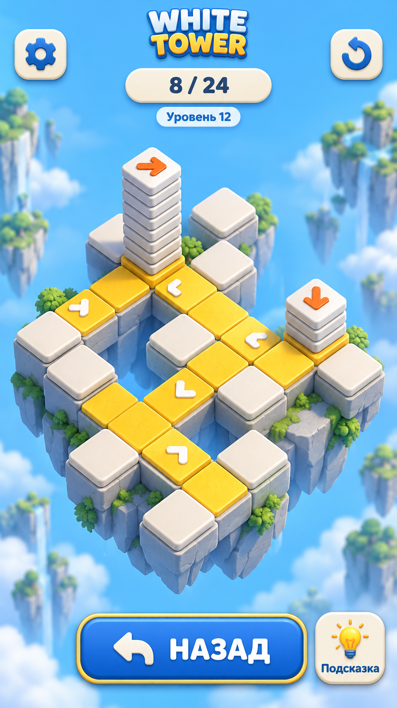
Исходный мокап Собран из отдельных элементов Скачать SVG со слоями 02-tutorial 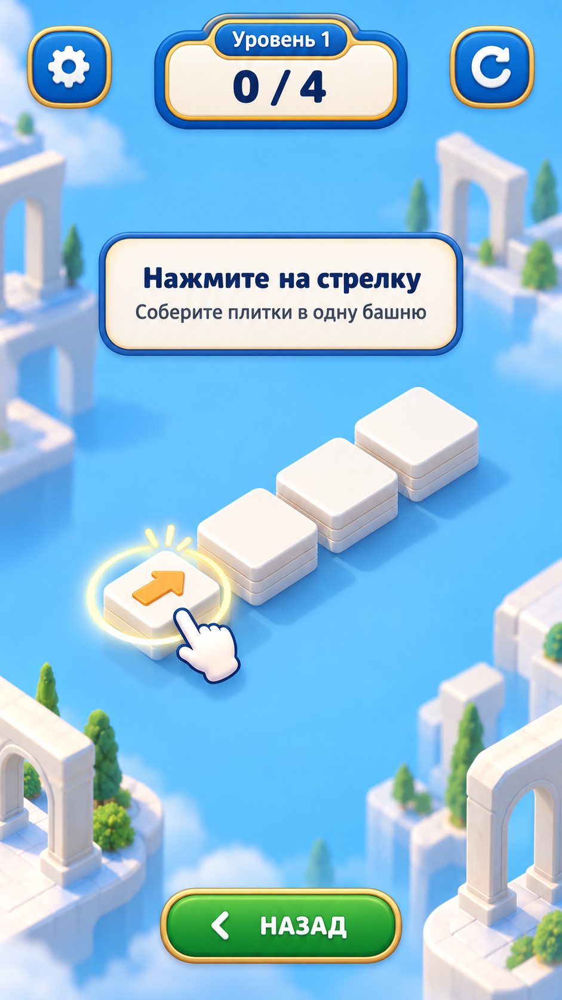
Исходный мокап 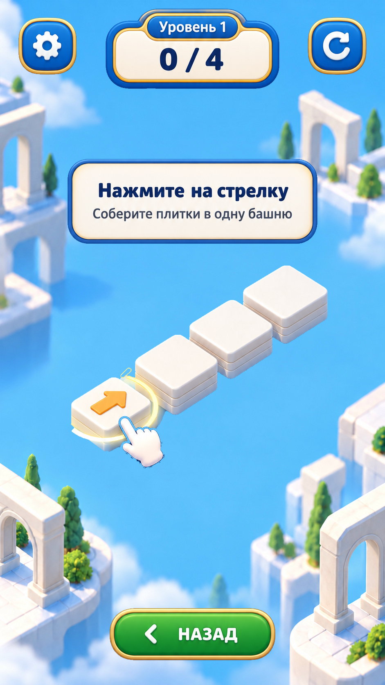
Собран из отдельных элементов Скачать SVG со слоями 03-hint 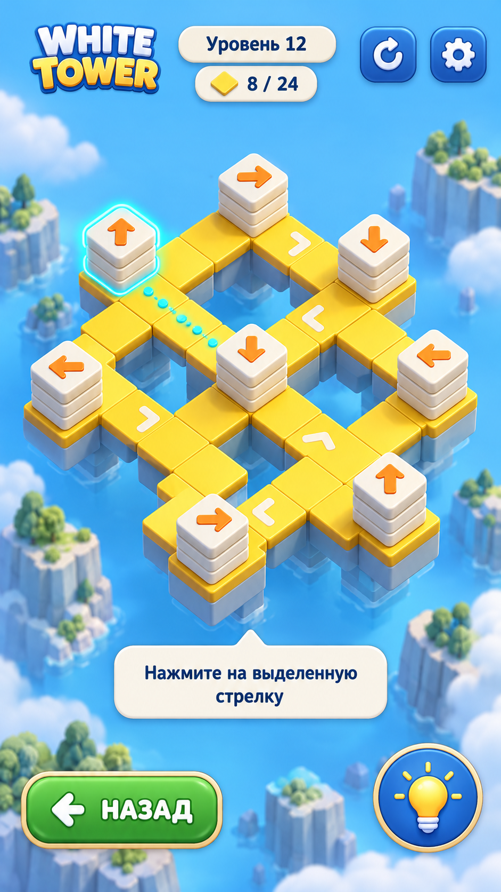
Исходный мокап 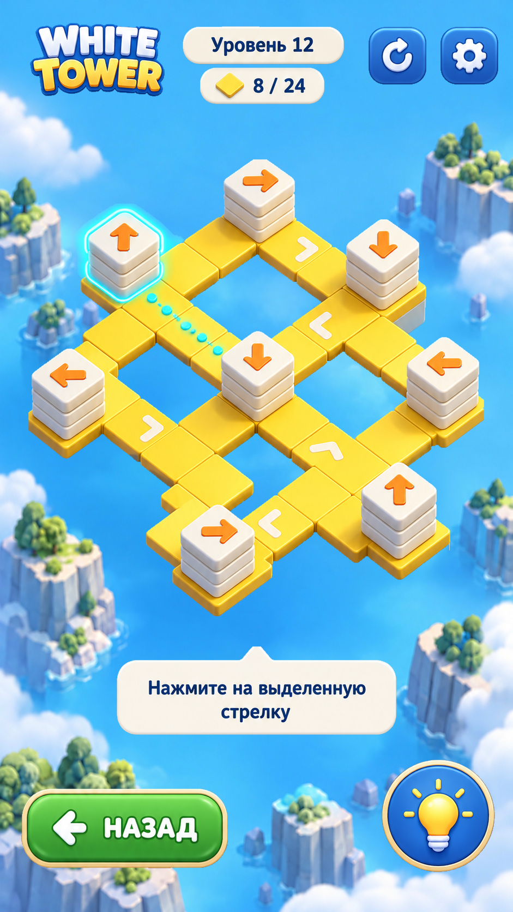
Собран из отдельных элементов Скачать SVG со слоями 04-levels 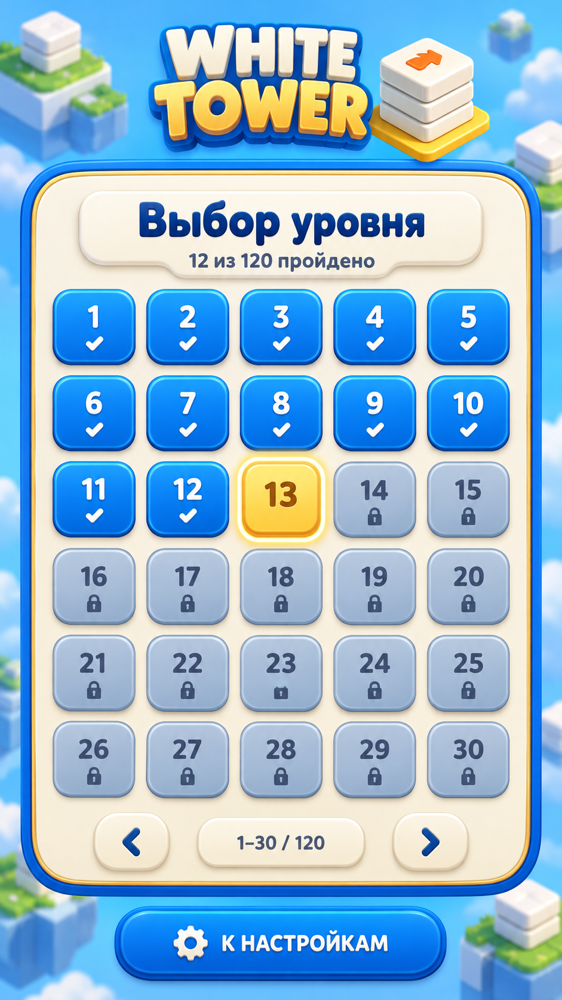
Исходный мокап Собран из отдельных элементов Скачать SVG со слоями 05-settings 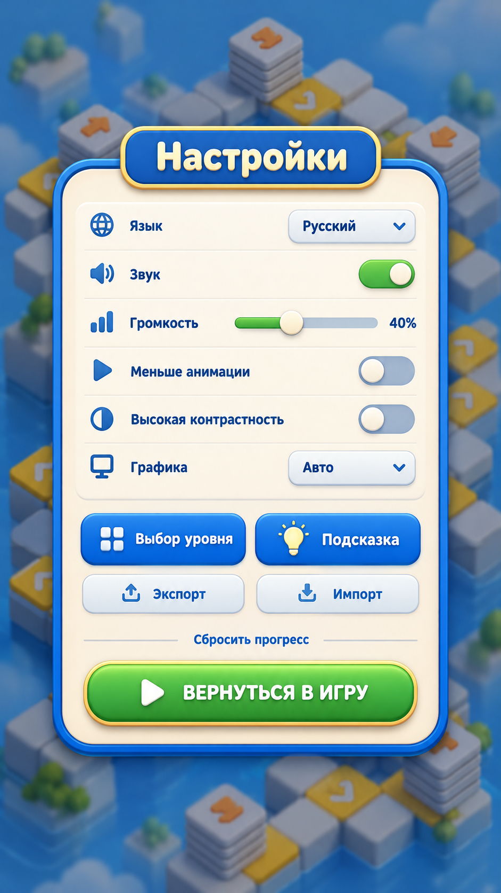
Исходный мокап Собран из отдельных элементов Скачать SVG со слоями 06-victory 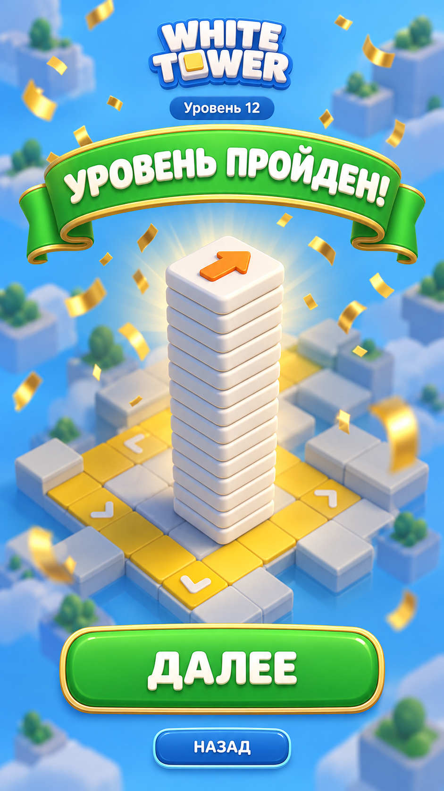
Исходный мокап 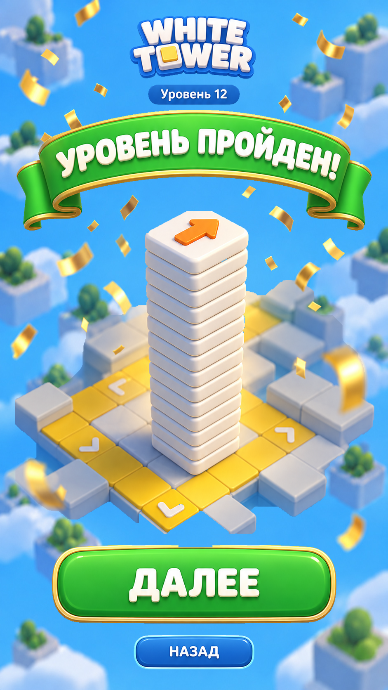
Собран из отдельных элементов Скачать SVG со слоями 07-campaign-complete 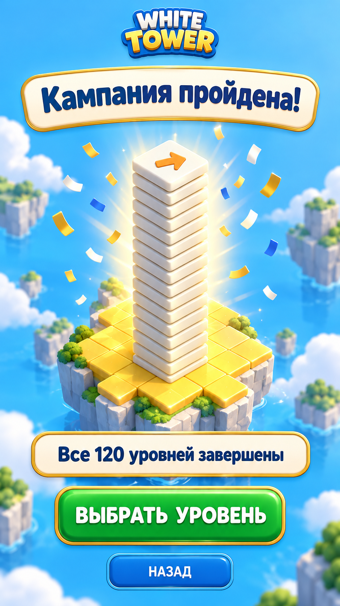
Исходный мокап 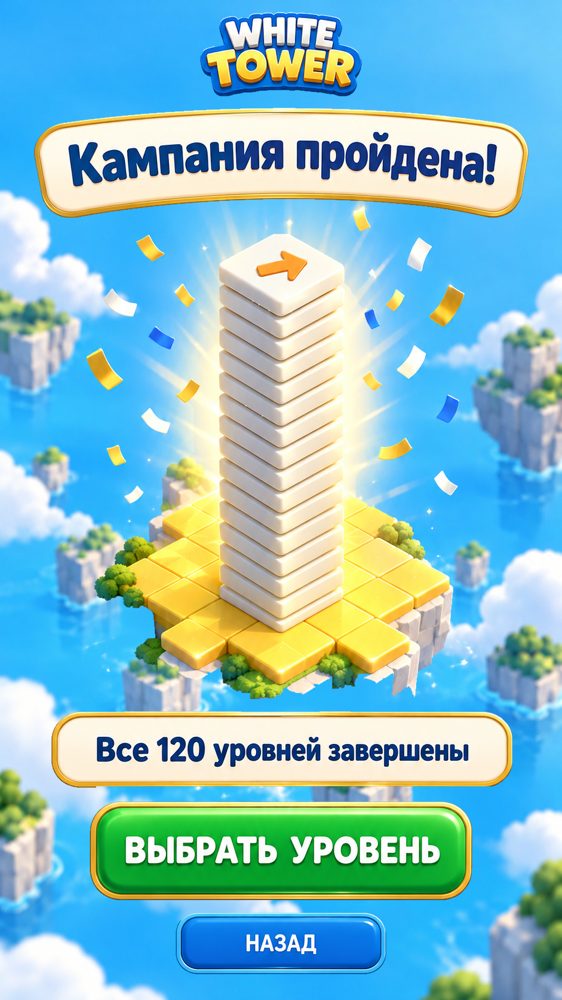
Собран из отдельных элементов Скачать SVG со слоями 08-reset-confirmation 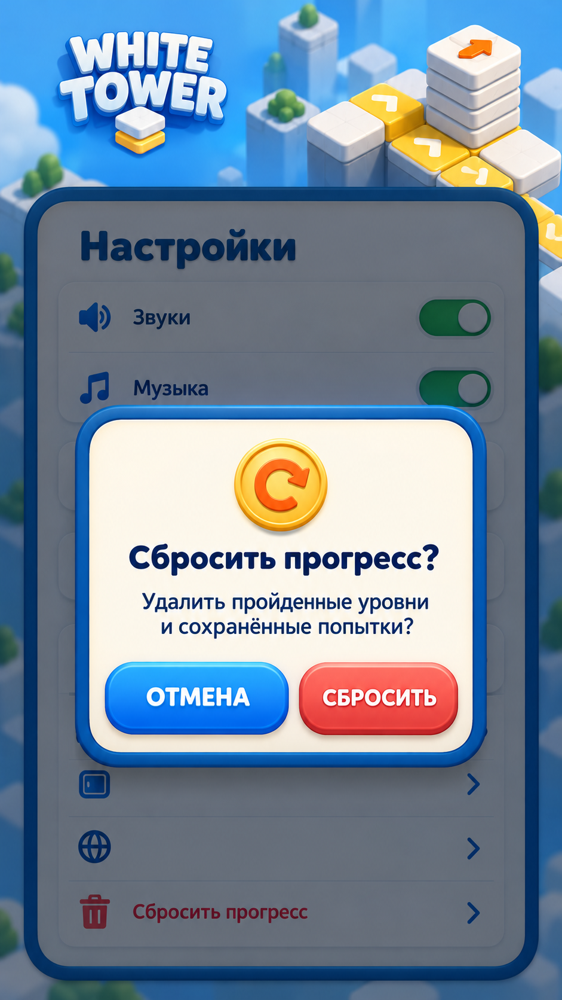
Исходный мокап Собран из отдельных элементов Скачать SVG со слоями 09-storage-recovery 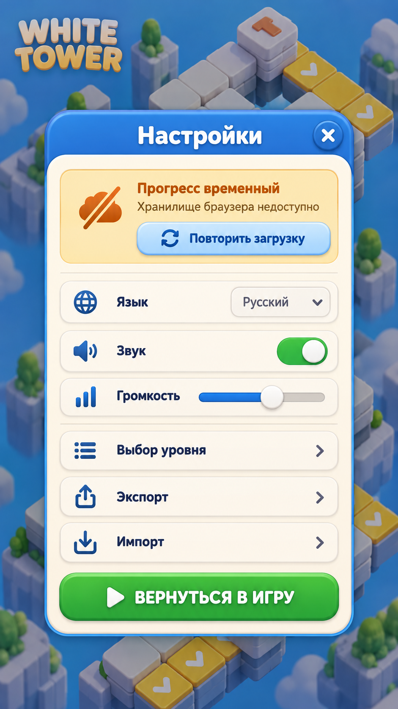
Исходный мокап 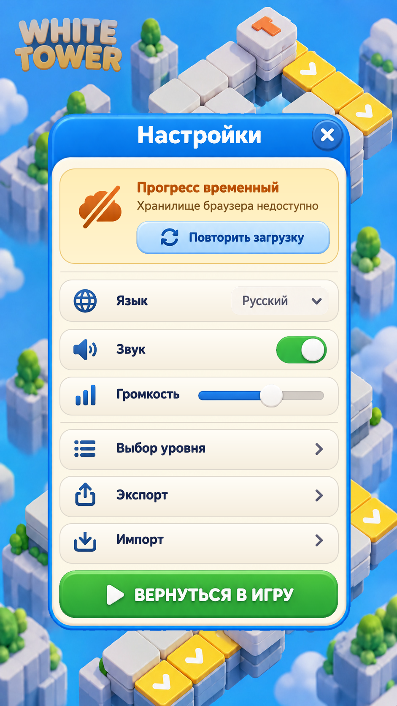
Собран из отдельных элементов Скачать SVG со слоями 10-service-states 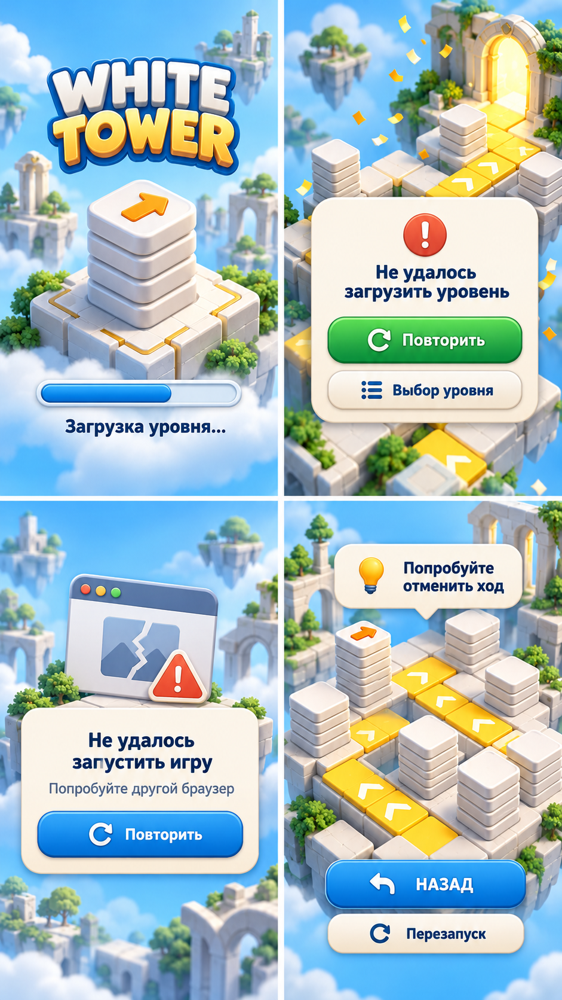
Исходный мокап 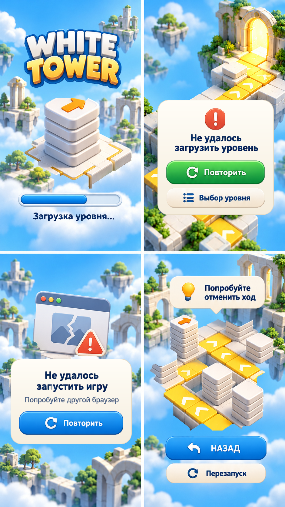
Собран из отдельных элементов Скачать SVG со слоями